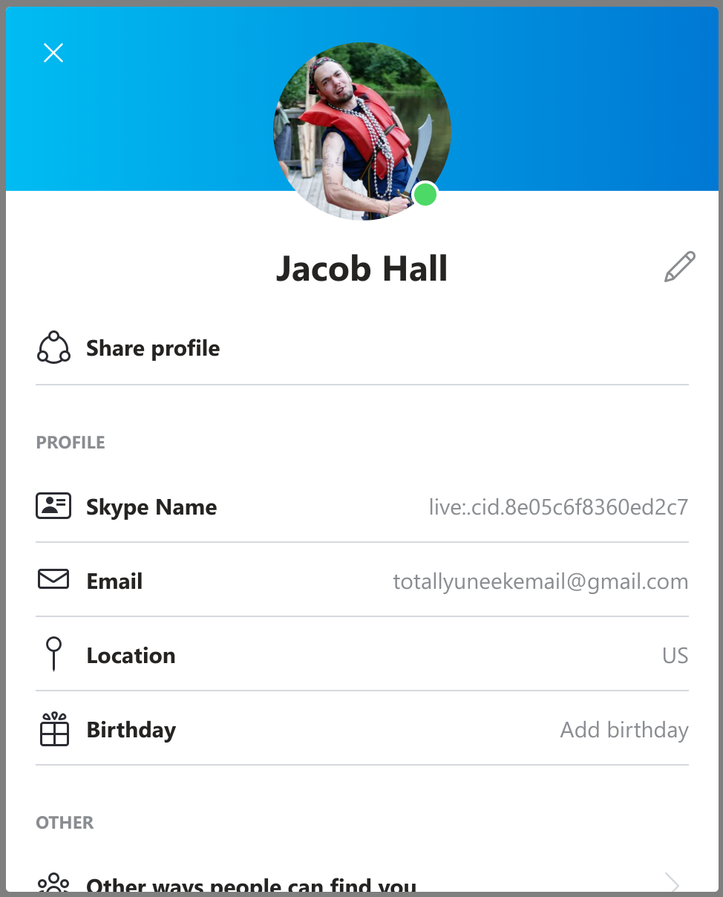

Let's test some Skype URIs on MacOS!
It seems that Skype removed their Applescript functionality a few years back. I can't find an official announcement, but this Microsoft Community thread and almost no posts about the topic from the last ~5 years has me convinced.
So, what other options do we have to control Skype using scripts? Skype supports URIs, which basically are links that open applications instead of websites. There's a page on Skype's website that describes the different actions your URI can make, including video calls! The syntax to make a video call is as follows:
skype:participant1[;participant2;...participant9]?call&video=true
Since I'm just looking for a URI that makes a video call to one person, this should be pretty simple. But, what exactly do we replace "participant1" with to tell Skype who we want to call? Presumably the recipient's "Skype Name," which I found by clicking on my profile from within the Skype app:

So, my Skype Name is live:.cid.8e05c6f8360ed2c7, glad to meet ya. Here's the HTML code for a link to video call me on Skype:
<a href="skype:live:.cid.8e05c6f8360ed2c7?call&video=true">Call me on Skype</a>And here's what it looks like IRL: Call me on Skype
When I clicked it, my phone started buzzing with an incoming Skype call. Hooray!
Okay Jacob, that's great, but how do I use this fancy Skype URI from a script on my computer instead of opening this weird blog post to call you? On Mac, there's an open command that is capable of handling URIs. So if you open your Terminal application, and type the following in, and cross your fingers, it might just do the same thing:
Note that I added double slashes after the skype: because that's how it always looks in open code examples. It might also work without them
open skype://live:.cid.8e05c6f8360ed2c7?call&video=true
This might work; I don't have a Mac of my own to fully test it out. If it does, you could use the Run Shell Script action in Automator to run this code within any Automator workflow.